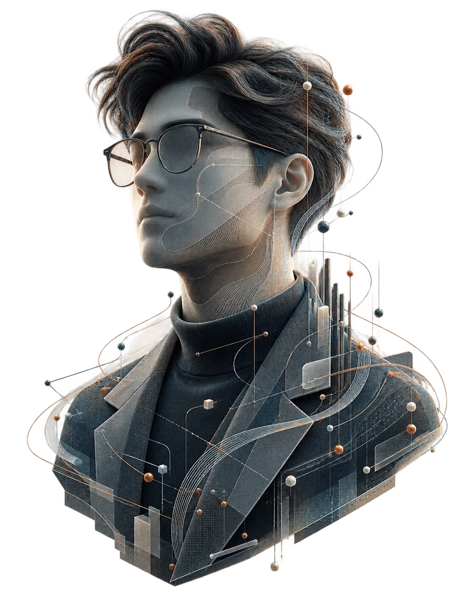

Yanfeng Automotive Interiors — AI / Machine Learning Engineer Intern
Corporate Strategy. Architecture and core engineering of VIA.
Novi, Michigan · May 2026 – Aug 2026
AI Systems & Backend Engineer · New York
Open to 2027 new-grad opportunities
I build production AI systems and high-throughput backends where correctness can be proven — from auditable agent workflows to transaction paths that preserve their invariants under burst load.

Profile · AI / backend / systemsEngineering lens
I start with a production question: how would we know if this stopped working? That changes the architecture. AI outputs need cited evidence and deterministic guards; distributed writes need idempotency, reconciliation and fault injection; model quality needs evaluation splits that survive the real environment.
The work below leads with measured outcomes, then lets you open the decisions behind them. Each decision includes the cost it introduced, because latency, accuracy and operational complexity are engineering choices rather than footnotes.
Selected work
Scan the outcomes first. Open any decision for the mechanism, verification method and trade-off I would explain to the engineer maintaining it next.
Corporate strategy ran on numbers scattered across spreadsheets, hand-kept notes and individual memory. A dashboard only answers questions someone already anticipated, and the questions that mattered were exactly the unanticipated ones. VIA takes an open question in plain language and returns a versioned decision brief: a recommendation, cited evidence behind every claim, an uncertainty interval, and a full audit trail of how the answer was produced.
Role Architecture owner. Built the agent decomposition and run plane, the typed semantic layer, retrieval, the context and artifact harness, the evaluation and release-gating harness, and the durability layer. Used by plant operations, finance and commercial planning teams.
Built with Python · FastAPI · PostgreSQL · Redis · durable workflow engine with leases and fencing tokens · LangGraph / OpenAI SDK · object storage · Docker · Azure
Data is checked against lineage and data contracts. Forecast against rolling-origin backtests and interval calibration. Lead against whether the assembled evidence is sufficient for the decision being asked.
Why not the obvious split A split by department looked natural but gave every agent the same failure mode — it could only be judged by reading its prose. Any decomposition that produced a part with no independent way to check it was rejected.
Agents propose; the plane executes. Every step carries a typed contract — inputs, declared capability, expected output shape, idempotency key — and a step whose declared capability does not cover its action is refused.
What it cost Latency, and a great deal of interface plumbing. What it bought was replayability, and replayable runs are the only reason the rest of the system is testable at all.
It proposes hypotheses and query plans; every number a human sees is produced by a typed semantic layer under read-only access. Tools are revealed by progressive disclosure, so an agent only ever sees the capabilities its current task justifies. Untrusted files and web content are taint-marked and parsed in a sandbox, and every side effect carries an intent/receipt pair into an immutable audit trail.
The unexpected benefit Scoping capabilities per step bounds blast radius if a prompt is subverted — but the effect that showed up immediately was fewer wrong tool choices, because the catalog the model had to choose from got smaller.
The system permitted 24 tool calls, but the 24k-character context budget physically held about six full results. Everything after that was silently truncated, and the evidence gate was confidently ruling on partial data. Fixed with an artifact store holding full results outside the context, a bounded projection, and a manifest recording exactly which ranges were dropped.
How it was found The wrong answers were internally consistent and cited real documents — they were just citing the beginning of every document. The regression tests now require citing mid-document rows, which a truncating harness cannot pass.
After an internal experiment showed same-model self-judging quietly passing known-bad outputs, every gate that could be made deterministic was: counterexample tests for known-wrong inputs, trajectory invariants over execution order, and timeout, duplicate and rate-limit fault injection. Version selection, lineage, idempotency and causal order moved out of model judgment into runtime guards.
The principle These are properties a program can check exactly. Asking a model to be careful about them is strictly worse than making them impossible to violate.
Hybrid retrieval — lexical matching for exact identifiers, dense retrieval for paraphrase, RRF fusion and cross-encoder reranking enabled per query by risk and latency budget rather than globally. Retrieval recall, context recall and answer faithfulness are scored separately, so a confident answer built on the wrong evidence still counts as a failure.
The trade, stated plainly 2.4× slower retrieval is right for a workload a human reads for minutes, and wrong for anything interactive. Worth stating rather than burying.
Durable run and event ledgers, leases and fencing tokens so a stalled worker cannot resume and write after reassignment, idempotent steps behind a transactional outbox, and exactly one component owning retries. Rejected trajectories are retained alongside accepted ones.
Both halves learned the hard way An earlier version had both the workflow engine and the HTTP client retrying, which turned one transient failure into a multiplied burst against a rate-limited upstream. And retaining rejected paths is what lets a human review a bad call — not just the answer that survived.
A single target period can carry up to 47 vintages of the same figure, so a query missing a version filter sums revisions instead of selecting one — and one wrong source selection produced a measured 4.4× undercount. Releases, actuals, days-on-hand, forecasts and financials were normalized into versioned facts with enforced source, grain, coverage and provenance, and version guards became query-time invariants.
Why enforcement, not documentation Nobody notices a 4.4× undercount in a slide until a commitment has been made on it. Documentation plus review is not a control for a silent failure.
A limited-inventory transaction platform where the entire day's volume lands at once. The original path serialized on hot inventory rows, so tail latency blew out exactly when volume peaked, and every incident ended one of two ways: an oversell, or an order stranded in a state nobody could explain.
Role Owned the flash-sale write path, the messaging reliability protocol and cross-store consistency, then generalized the two pieces of infrastructure the team kept rewriting by hand — task orchestration and long-running business flows. Both adopted by other business lines.
Built with Java · Spring Boot · MyBatis-Plus · MySQL · Redis (Lua) · RocketMQ · JMeter · Docker
A Redis Lua script reserves inventory and enforces one-order-per-user atomically in a single round trip. RocketMQ absorbs the burst off the synchronous path, MySQL holds transaction truth, and a multi-level cache defends hot keys against breakdown, penetration and avalanche.
Why not a lock A distributed lock was the obvious answer and the wrong one — it would have reintroduced exactly the serialization I was there to remove.
Under a 4,000-request burst at 1,000+ QPS the path held P99 under 300 ms at a 0% error rate — and, more to the point, the business invariants were asserted at that load: zero oversell, zero duplicate valid orders.
The point A load test that only measures latency will happily certify a system that is quietly double-selling.
A three-state reliable-publish protocol: synchronous send backed by a local transaction table, failed messages persisted and retried by a scheduled job, consumers made idempotent by business key. Plus order-to-inventory reconciliation with compensating writes, because a protocol that assumes it is never wrong has no recovery path when it is.
How it was verified 12 fault-injection scenarios — broker loss, consumer crash mid-ack, duplicate delivery, partition. Every anomaly entered a recovery path: messaging converged within 60 seconds, cross-store drift within 4 minutes.
The product-detail and scoring chains were nested
CompletableFuture.thenCombine — execution order encoded in the call
structure, so nothing could be reordered, timed out per node, or tuned. I replaced
them with an annotation-driven orchestration engine where a node declares its stage,
ordering and serial-versus-parallel mode, and removed the shared-context data race
by giving each branch its own copy, merged at the join under an explicit per-key
ownership rule.
Borrowed from MVCC Writers never block readers, and no write is silently lost. A merge conflict becomes a configuration error caught at registration — not a missing field discovered in production three weeks later.
A generic state-machine engine with topology declared through a builder — nodes, initial state, terminal set, failure policy — so a new business line registers a definition with zero change to the core engine. Every transition writes an audit log, and failure and retry policies jointly decide retry-and-recover versus escalation to a human queue.
Why that last distinction matters It determines whether an operator ever has to open the database to find out what happened.
Load testing paired with AI-assisted inspection surfaced a Tomcat thread-pool bottleneck and a MyBatis-Plus concurrency defect, while screening for CPU hotspots, memory leaks and OOM risk.
The discipline Every suggestion had to reproduce under load before it counted. Most did not. The two that did were the two that mattered.
Production-line visual inspection depended on a handful of senior inspectors whose tolerance judgments had never been written into a spec. The vision model meant to assist them read 99% precision offline and 85% on the live line. Both problems turned out to be evaluation problems rather than model problems.
Role Owned model post-training and the data and evaluation loop; worked with the platform team on the production deployment.
Built with PyTorch · LoRA / SFT · DPO · YOLO · OpenCV · TensorRT · Docker · industrial camera pipeline
Post-trained the decision model with LoRA SFT followed by DPO on inspector accept/reject pairs, raising agreement with senior inspectors from 76% to 91%.
Why DPO The available signal was "this one passes, that one does not" — preference data, not a written rule to imitate. DPO fits the shape of what the floor could actually give me.
The held-out set shared batches, stations and time windows with training. Rebuilt the loop with model-assisted pre-labeling, uncertainty and class-conflict routing for human adjudication, and hidden shadow evaluation grouped by batch, station and time.
Where the saving came from Annotation agreement went 71% → 94% and labeling effort fell 55% at matched accuracy — from routing the ambiguous cases to people, not from labeling less carefully.
Deployed with Docker and TensorRT mixed precision — INT8 backbone, FP16 regression heads — at roughly 28 ms per frame and 25 FPS, holding ≥98% precision and recall on two defect classes and covering about 90% of line inspection time, with cross-station drift monitoring.
Why the heads stayed FP16 INT8 on the coordinate regression heads cost more localization accuracy than the latency it returned was worth. The backbone tolerated it cleanly.
Experience
Yanfeng Automotive Interiors — AI / Machine Learning Engineer Intern
Corporate Strategy. Architecture and core engineering of VIA.
Novi, Michigan · May 2026 – Aug 2026
Capgemini — Backend Software Engineer Intern
Java. Transaction path, messaging reliability, and two reusable framework components.
Shanghai · Aug 2024 – Sep 2024
NIO — Computer Vision / Machine Learning Engineer Intern
Advanced Manufacturing Engineering. Post-training, evaluation loop and deployment.
Shanghai · May 2024 – Jul 2024
Toolkit
Education
New York University
M.S. Computer Engineering, concentration in AI and Data Modeling · GPA 3.8+
New York · Sep 2025 – May 2027
The Chinese University of Hong Kong
B.Eng. Computer Engineering · Top 20% of program
Hong Kong · Sep 2021 – Jun 2025
Data Structures & Algorithms · Operating Systems · Distributed Systems · Computer Architecture · Machine Learning · Deep Learning · Computer Vision